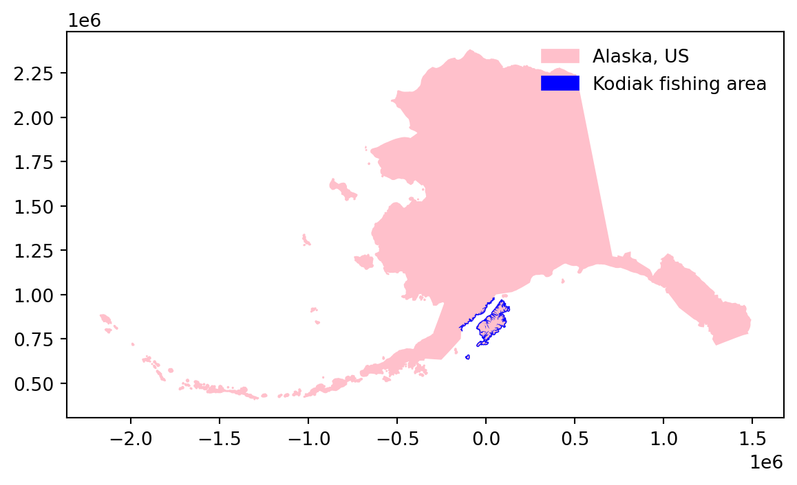

import os
import numpy as np
import pandas as pd
import matplotlib.pyplot as plt
import matplotlib.patches as mpatches # for creating legends
import xarray as xr
import rioxarray as rioxr
import geopandas as gpd
from rasterio.features import rasterize # for rasterizing polygons
# -----------
# update pandas column display
pd.set_option('display.max_columns', None)23 Raster manipulation II
In this lesson we will learn how to select pixels in a raster by creating a mask from a polygon. The goal will be to calculate total number of meters of vessel tracks within the fishing districts of the Kodiak fishing registration area in Alaska.
23.1 Data
We will use three datsets about Alaska in this lesson.
Dataset 1
This is a raster dataset at 1km/pixel resolution showing shipping intensity in the Pacific Arctic region during August 2017. The value at each raster cell represents the total length, in meters, of all vessel tracks within each cell. The dataset is part of time series of shipping intensity monthly and the complete datset can be accessed at: https://arcticdata.io/catalog/view/doi:10.18739/A2SQ8QJ9S.
Dataset 2
Vector data showing statistical areas dividing waters of the State of Alaska and the adjacent Exclusive Economic Zone (EEZ) into small units for the purpose of reporting and analyzing fishery harvest. The dataset is archived at KNB and can be accessed at the following link: https://knb.ecoinformatics.org/view/doi:10.5063/F1QR4VJK.
Dataset 3
A polygon showing Alaska’s boundary extracted from the 2022 US Census TIGER shapefiles and with updated CRS.
23.2 Import data
Let’s start by importing the necessary libraries and functions:
# open raster
raw_dist = rioxr.open_rasterio('https://arcticdata.io/metacat/d1/mn/v2/object/urn%3Auuid%3A0d223f34-77fc-4ebe-8a58-459b7e575668')
raw_dist<xarray.DataArray (band: 1, y: 2308, x: 3087)>
[7124796 values with dtype=float32]
Coordinates:
* band (band) int64 1
* x (x) float64 -2.55e+06 -2.549e+06 ... 5.347e+05 5.357e+05
* y (y) float64 2.711e+06 2.71e+06 ... 4.053e+05 4.043e+05
spatial_ref int64 0
Attributes:
AREA_OR_POINT: Area
STATISTICS_MAXIMUM: 2564975.75
STATISTICS_MEAN: nan
STATISTICS_MINIMUM: 0
STATISTICS_STDDEV: nan
_FillValue: -3.4e+38
scale_factor: 1.0
add_offset: 0.0# open fishing areas polygons
fishing_areas = gpd.read_file(os.path.join(os.getcwd(), 'data', 'Alaska_Commercial_Salmon_Boundaries.gpkg'))
fishing_areas.head()| OBJECTID | GEOMETRY_START_DATE | GEOMETRY_END_DATE | STAT_AREA | STAT_AREA_NAME | FISHERY_GROUP_CODE | GIS_SERIES_NAME | GIS_SERIES_CODE | REGION_CODE | REGISTRATION_AREA_NAME | REGISTRATION_AREA_CODE | REGISTRATION_AREA_ID | REGISTRATION_LOCATION_ABBR | MANAGEMENT_AREA_NAME | MANAGEMENT_AREA_CODE | DISTRICT_NAME | DISTRICT_CODE | DISTRICT_ID | SUBDISTRICT_NAME | SUBDISTRICT_CODE | SUBDISTRICT_ID | SECTION_NAME | SECTION_CODE | SECTION_ID | SUBSECTION_NAME | SUBSECTION_CODE | SUBSECTION_ID | COAR_AREA_CODE | CREATOR | CREATE_DATE | EDITOR | EDIT_DATE | COMMENTS | STAT_AREA_VERSION_ID | Shape_Length | Shape_Area | geometry | |
|---|---|---|---|---|---|---|---|---|---|---|---|---|---|---|---|---|---|---|---|---|---|---|---|---|---|---|---|---|---|---|---|---|---|---|---|---|---|
| 0 | 12 | 1975-01-01 00:00:00+00:00 | NaT | 33461 | Tanana River mouth to Kantishna River | B | Salmon | B | 3 | Yukon Area | Y | None | None | Upper Yukon | YU | 6 District | Y-6 | None | 6-A Subdistrict | 6-A | None | None | NaN | None | None | None | YU | Evelyn Russel | 2006-03-26 00:00:00+00:00 | Sabrina Larsen | 2017-02-02 00:00:00+00:00 | Yukon District, 6 Subdistrict and 6-A Section ... | None | 4.610183 | 0.381977 | MULTIPOLYGON (((-151.32805 64.96913, -151.3150... | |
| 1 | 13 | 1975-01-01 00:00:00+00:00 | NaT | 33462 | Kantishna River to Wood River | B | Salmon | B | 3 | Yukon Area | Y | None | None | Upper Yukon | YU | 6 District | Y-6 | None | 6-B Subdistrict | 6-B | None | None | NaN | None | None | None | YU | Evelyn Russel | 2006-03-26 00:00:00+00:00 | Sabrina Larsen | 2017-02-02 00:00:00+00:00 | Yukon District, 6 Subdistrict and 6-B Section ... | None | 3.682421 | 0.321943 | MULTIPOLYGON (((-149.96255 64.70518, -149.9666... | |
| 2 | 18 | 1978-01-01 00:00:00+00:00 | NaT | 33431 | Toklik to Cottonwood Point | B | Salmon | B | 3 | Yukon Area | Y | None | None | Lower Yukon | YL | 3 District | Y-3 | None | None | None | None | None | NaN | None | None | None | YL | Evelyn Russel | 2006-03-26 00:00:00+00:00 | Sabrina Larsen | 2017-02-02 00:00:00+00:00 | Yukon District and 3 Subdistrict until 1/1/1980 | None | 2.215641 | 0.198740 | MULTIPOLYGON (((-161.39853 61.55463, -161.4171... | |
| 3 | 19 | 1980-01-01 00:00:00+00:00 | NaT | 33442 | Right Bank, Bishop Rock to Illinois Creek | B | Salmon | B | 3 | Yukon Area | Y | None | None | Upper Yukon | YU | 4 District | Y-4 | None | 4-B Subdistrict | 4-B | None | None | None | NaN | None | None | None | YU | Evelyn Russel | 2006-03-26 00:00:00+00:00 | Sabrina Larsen | 2017-02-02 00:00:00+00:00 | None | None | 9.179852 | 0.382788 | MULTIPOLYGON (((-153.15234 65.24944, -153.0761... |
| 4 | 20 | 1980-01-01 00:00:00+00:00 | NaT | 33443 | Left Bank, Cone Point to Illinois Creek | B | Salmon | B | 3 | Yukon Area | Y | None | None | Upper Yukon | YU | 4 District | Y-4 | None | 4-B Subdistrict | 4-B | None | None | None | NaN | None | None | None | YU | Evelyn Russel | 2006-03-26 00:00:00+00:00 | Sabrina Larsen | 2017-02-02 00:00:00+00:00 | None | None | 9.500826 | 0.378262 | MULTIPOLYGON (((-152.99905 65.17027, -152.9897... |
# open Alaska boundary
ak = gpd.read_file(os.path.join(os.getcwd(), 'data', 'alaska_perimeter','alaska_perimeter.shp'))
ak| REGION | DIVISION | STATEFP | STATENS | GEOID | STUSPS | NAME | LSAD | MTFCC | FUNCSTAT | ALAND | AWATER | INTPTLAT | INTPTLON | geometry | |
|---|---|---|---|---|---|---|---|---|---|---|---|---|---|---|---|
| 0 | 4 | 9 | 02 | 01785533 | 02 | AK | Alaska | 00 | G4000 | A | 1478943541175 | 245377731557 | +63.3473560 | -152.8397334 | MULTIPOLYGON (((-1728945.561 474182.534, -1728... |
23.3 Fishing areas preparation
We need to do some processing of each dataset before combining them for analysis. Let’s start with the fishing areas.
23.3.1 Update column names and CRS
# make column names small caps
fishing_areas.columns = fishing_areas.columns.str.lower()
print(fishing_areas.columns, "\n")
# -----------------------
# check CRS
print(f"raw_dist: {raw_dist.rio.crs} \nak: {ak.crs} \nfishing_areas: {fishing_areas.crs}\n")
#print(raw_dist.rio.crs == ak.crs)
# transform fishing_areas CRS to epsg:3338 (AK CRS)
fishing_areas = fishing_areas.to_crs(ak.crs)
print('CRS match:', raw_dist.rio.crs == fishing_areas.crs)Index(['objectid', 'geometry_start_date', 'geometry_end_date', 'stat_area',
'stat_area_name', 'fishery_group_code', 'gis_series_name',
'gis_series_code', 'region_code', 'registration_area_name',
'registration_area_code', 'registration_area_id',
'registration_location_abbr', 'management_area_name',
'management_area_code', 'district_name', 'district_code', 'district_id',
'subdistrict_name', 'subdistrict_code', 'subdistrict_id',
'section_name', 'section_code', 'section_id', 'subsection_name',
'subsection_code', 'subsection_id', 'coar_area_code', 'creator',
'create_date', 'editor', 'edit_date', 'comments',
'stat_area_version_id', 'shape_length', 'shape_area', 'geometry'],
dtype='object')
raw_dist: EPSG:3338
ak: EPSG:3338
fishing_areas: EPSG:4326
CRS match: True23.3.2 Data selection
This data includes fine scale subdivisions of the fishing areas. We’ll be working with data from the Kodiak registration area only, so let’s select that.
# Registration areas:
print(fishing_areas.registration_area_name.unique())
# select Kodiak area
kodiak = fishing_areas[fishing_areas.registration_area_name == 'Kodiak Area' ]
print('# geometries in Kodiak area:', len(kodiak) )['Yukon Area' 'Kuskokwim Area' 'Prince William Sound Area'
'Bristol Bay Area' 'Chignik Area' 'Kodiak Area' 'Alaska Peninsula Area'
'Cook Inlet Area' 'Norton Sound-Port Clarence Area'
'Arctic-Kotzebue Area' 'Aleutian Islands Area' 'Atka-Amlia Islands Area'
'Southeastern Alaska Area']
# geometries in Kodiak area: 11823.3.3 Plot of Kodiak fisihing area
One way to add a custom legend is to create an Patch object for each geometry in our plot.
We can create a Patch with a custom color and legend via the mpatches.Patch() function:
great_patch = mpatches.Patch( color = 'great_color',
label = 'great_label')To add this patch to the legend we should first create an axis, for example by calling fig, ax = plt.subplots() at the beginning of our plot. Then we add great_patch to the legend:
ax.legend(handles = [great_patch])Example:
# create AK plot with color patches in legend
fig, ax = plt.subplots()
# --------------------------------------------
ak.plot(ax=ax, color = 'pink')
ak_patch = mpatches.Patch(color='pink',
label='Alaska, US')
# --------------------------------------------
#kodiak.dissolve().plot(ax=ax, color = 'blue')
kodiak.plot(ax=ax, color = 'blue')
kodiak_patch = mpatches.Patch(color='blue',
label='Kodiak fishing area')
# ------------------------------------------
# create elegend
ax.legend(handles = [ak_patch, kodiak_patch], frameon=False, loc='upper right')
plt.show()
23.3.4 Dissolve & explode polygons
The Kodiak data is too granular for our purposes: we want to get statistics on distance travelled on each fishing district.
# check number of districts and rows
print(f"number of geometries: {len(kodiak)}")
print(f"number of districts: {len(kodiak.district_name.unique())}")number of geometries: 118
number of districts: 7We can aggregate the geometries based on the values of a column using the dissolve() method. In our case we will dissolve by district name:
# dissolve by district
# as_index=False indicates we want to keep the "groupby" column as a column (not index)
districts = kodiak[['geometry','district_name']].dissolve(by='district_name', as_index=False)
districts | district_name | geometry | |
|---|---|---|
| 0 | Afognak District | POLYGON ((83189.145 888000.815, 75313.997 8878... |
| 1 | Alitak Bay District | POLYGON ((-20595.210 769560.395, -20547.170 76... |
| 2 | Eastside Kodiak District | MULTIPOLYGON (((-100710.109 633391.483, -10080... |
| 3 | Mainland District | MULTIPOLYGON (((-139689.424 797362.176, -14034... |
| 4 | Northeast Kodiak District | POLYGON ((100175.379 849237.562, 100103.728 84... |
| 5 | Northwest Kodiak District | POLYGON ((9534.303 838682.678, 9542.565 838668... |
| 6 | Southwest Kodiak District | POLYGON ((-31133.469 786483.521, -31127.360 78... |
Let’s take a look at the districts:
Legend location
We can control the legend location adding loc and bbox_to_anchor to the legend_kwds.
It can be useful to combine both of these to place the legend outside the graph:
locindicates the corner of the legend box we want to locate, andbbox_to_anchoris a tuple with coordinates indicating where to place the corner specified inloc. Values between 0 and 1 are within the axes (the plot).
districts.plot(column='district_name',
legend=True,
legend_kwds={'loc': "upper left", 'bbox_to_anchor': (1, 1)})/Users/galaz-garcia/anaconda3/envs/mpc-env/lib/python3.11/site-packages/geopandas/plotting.py:732: FutureWarning: is_categorical_dtype is deprecated and will be removed in a future version. Use isinstance(dtype, CategoricalDtype) instead
if pd.api.types.is_categorical_dtype(values.dtype):<Axes: >Notice the geometries of some our districts are multipolygons. To simplify our analysis for the purpose of this lesson we will separate each multipolygon into individual polygons. We can do this using the explode() method for gpd.GeoDataFrames:
# explode polygons
# ignore_index=True resests the index so we don't get a multi-index
districts = districts.explode(ignore_index=True)
districts| district_name | geometry | |
|---|---|---|
| 0 | Afognak District | POLYGON ((83189.145 888000.815, 75313.997 8878... |
| 1 | Alitak Bay District | POLYGON ((-20595.210 769560.395, -20547.170 76... |
| 2 | Eastside Kodiak District | POLYGON ((-100710.109 633391.483, -100806.993 ... |
| 3 | Eastside Kodiak District | POLYGON ((-14519.794 714624.553, -14616.441 71... |
| 4 | Mainland District | POLYGON ((-139689.424 797362.176, -140346.100 ... |
| 5 | Mainland District | POLYGON ((-13390.443 922237.350, -13416.238 92... |
| 6 | Northeast Kodiak District | POLYGON ((100175.379 849237.562, 100103.728 84... |
| 7 | Northwest Kodiak District | POLYGON ((9534.303 838682.678, 9542.565 838668... |
| 8 | Southwest Kodiak District | POLYGON ((-31133.469 786483.521, -31127.360 78... |
23.4 Distance raster preparation
Now let’s move on to our raster.
23.4.1 Squeeze
First, we have an extra unnecessary dimension. Let’s get rid of it:
# get rid of band dimension
print(f"Before squeeze:\ndimensions {raw_dist.dims} \ncoords: {raw_dist.coords} \n")
raw_dist = raw_dist.squeeze().drop('band')
print(f"After squeeze:\ndimensions {raw_dist.dims}\ncoords: {raw_dist.coords}")Before squeeze:
dimensions ('band', 'y', 'x')
coords: Coordinates:
* band (band) int64 1
* x (x) float64 -2.55e+06 -2.549e+06 ... 5.347e+05 5.357e+05
* y (y) float64 2.711e+06 2.71e+06 ... 4.053e+05 4.043e+05
spatial_ref int64 0
After squeeze:
dimensions ('y', 'x')
coords: Coordinates:
* x (x) float64 -2.55e+06 -2.549e+06 ... 5.347e+05 5.357e+05
* y (y) float64 2.711e+06 2.71e+06 ... 4.053e+05 4.043e+05
spatial_ref int64 023.4.2 Updating no-data value
Take a look at the data:
raw_dist.plot()<matplotlib.collections.QuadMesh at 0x148d15350>The previous plot should make us think there are outliers or no-data values affecting the plot range. Let’s investigate this:
# check min and max
print(f"min: {raw_dist.min().item():,}, max: {raw_dist.max().item():,}")
# get no-data value
nodata = raw_dist.rio.nodata
print('no-data value', nodata)min: -3.3999999521443642e+38, max: 2,564,975.75
no-data value -3.4e+38We can select all pixels where there is raster data using the where() method. By default, where() will place np.nan (NAs) at every cell that does not satisty the condition.
# select pixels with data using where()
raw_dist.where(raw_dist != nodata)
# transform no data values into nan (float)
dist = raw_dist.where(raw_dist != nodata)
# check updates
print(f" min: {dist.min().item()}, max: {dist.max().item():,}")
dist.plot() min: 0.0, max: 2,564,975.75<matplotlib.collections.QuadMesh at 0x148ee3050>23.4.3 Clipping
Since we are only focusing on the Kodiak district, let’s clip the raster to this region:
# clip raster to Kodiak bounding box
kodiak_dist = dist.rio.clip_box(*districts.total_bounds)
# robust = True plots data within the 2th and 98th percentiles.
kodiak_dist.plot(robust=True)<matplotlib.collections.QuadMesh at 0x14935b610>Remember our goal is to calculate the total distance travelled in each district. We can take a look at the districts over the distance raster:
# raster + districts plot
fig, ax = plt.subplots()
kodiak_dist.plot(ax=ax, robust=True)
districts.plot(ax=ax, edgecolor='red', color='none')
plt.show()23.5 Distance in a single district
A mask is a dataset that indicates which locations in the raster we will keep and which will be converted to NAs or, in our case, zeros. It is common to transform a polygon into a raster mask that selects all pixels that touch the polygon.
To transform a geometry into a mask we can use the rasterize() function from rasterio.features:
rasterio is another popular Python library to work with rasters. Although many of its functions have been streamlined in rioxarray, there are still some that have not been replaced.
In the next cell we use the polygon for the Alitak district districts.loc[1,'geometry'] to create a mask for the raster.
# create raster mask based on Alitak polygon
alitak_mask = rasterize(shapes = [districts.loc[1,'geometry']], # a list of geometries
out_shape = kodiak_dist.shape, # shape of outout np array (shape of raster)
transform = kodiak_dist.rio.transform(), # transformation of raster
all_touched = True) # all pixels touched by geometries will be burned in
print(type(alitak_mask))
# print some info about mask
print('mask shape: ', alitak_mask.shape)
print('same shape as raster? ', alitak_mask.shape == kodiak_dist.shape)
print('unique values in mask', np.unique(alitak_mask))
plt.imshow(alitak_mask)<class 'numpy.ndarray'>
mask shape: (352, 289)
same shape as raster? True
unique values in mask [0 1]<matplotlib.image.AxesImage at 0x148f7aed0>To select pixels from the raster using the mask we can simply multiply both rasters together.
# apply mask to kodiak distances raster
dist_alitak = kodiak_dist * alitak_mask
dist_alitak.plot(robust=True)<matplotlib.collections.QuadMesh at 0x149244690>Finally, we can add up all the pixel values to obtain the total distance travelled by shipping vessels in Alitak:
print(f"total distance in Alitak: {dist_alitak.sum().item():,}")total distance in Alitak: 5,606,546.5Doing the previous process in a single cell:
# mask raster and calculate sum of pixels
alitak_mask = rasterize([districts.loc[1,'geometry']],
out_shape = kodiak_dist.shape,
transform = kodiak_dist.rio.transform(),
all_touched = True)
dist_in_alitak = (kodiak_dist * alitak_mask).sum().item()
dist_in_alitak5606546.523.6 Distance in all districts
Once we have achieved a good workflow for a single district, it is easy to repeat it using a for loop:
# calculate distance per district polygon
distances = []
for i in districts.index:
mask = rasterize([districts.loc[i,'geometry']],
out_shape=kodiak_dist.shape,
transform=kodiak_dist.rio.transform(),
all_touched=True)
dist_in_district = (kodiak_dist * mask).sum().item()
distances.append(dist_in_district)
distances[9804045.0,
5606546.5,
102465.03125,
22725528.0,
4788347.0,
673996.375,
20008534.0,
86952560.0,
6666639.0]Then we can add the distances as a column in our GeoDataFrame:
# add column with distance per district polygon
districts['total_distance'] = distances
districts| district_name | geometry | total_distance | |
|---|---|---|---|
| 0 | Afognak District | POLYGON ((83189.145 888000.815, 75313.997 8878... | 9.804045e+06 |
| 1 | Alitak Bay District | POLYGON ((-20595.210 769560.395, -20547.170 76... | 5.606546e+06 |
| 2 | Eastside Kodiak District | POLYGON ((-100710.109 633391.483, -100806.993 ... | 1.024650e+05 |
| 3 | Eastside Kodiak District | POLYGON ((-14519.794 714624.553, -14616.441 71... | 2.272553e+07 |
| 4 | Mainland District | POLYGON ((-139689.424 797362.176, -140346.100 ... | 4.788347e+06 |
| 5 | Mainland District | POLYGON ((-13390.443 922237.350, -13416.238 92... | 6.739964e+05 |
| 6 | Northeast Kodiak District | POLYGON ((100175.379 849237.562, 100103.728 84... | 2.000853e+07 |
| 7 | Northwest Kodiak District | POLYGON ((9534.303 838682.678, 9542.565 838668... | 8.695256e+07 |
| 8 | Southwest Kodiak District | POLYGON ((-31133.469 786483.521, -31127.360 78... | 6.666639e+06 |
23.7 Acknowledgments
This lesson was adapted from the Spatial and Image Data Using GeoPandas lesson from the NCEAS Scalable and Computationally Reproducible Approaches to Arctic Research workshop.